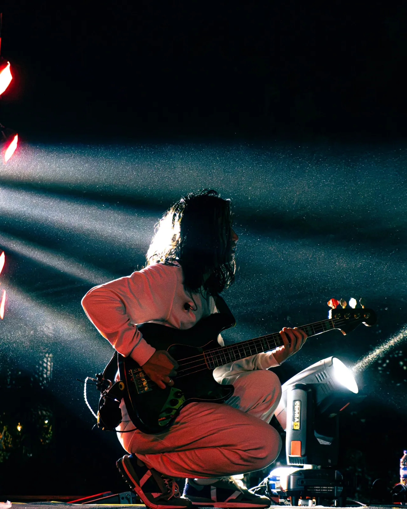
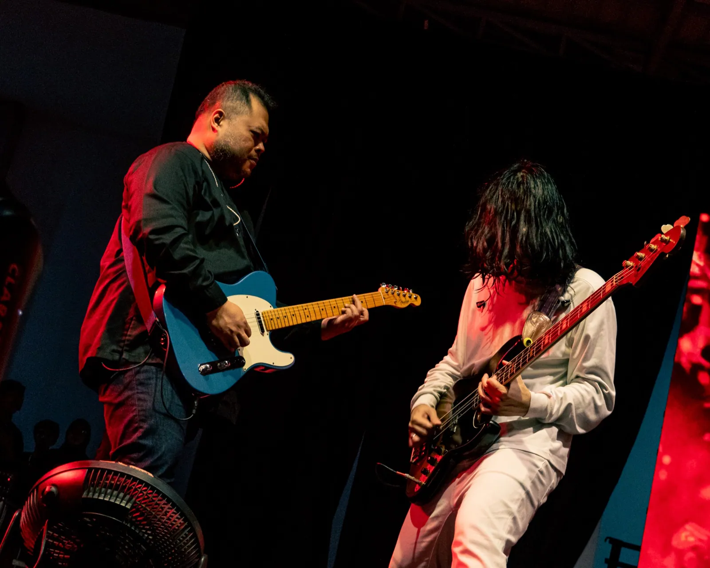
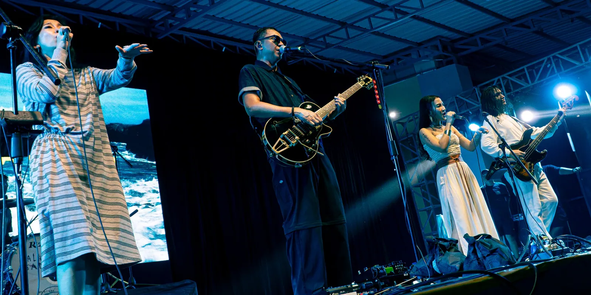
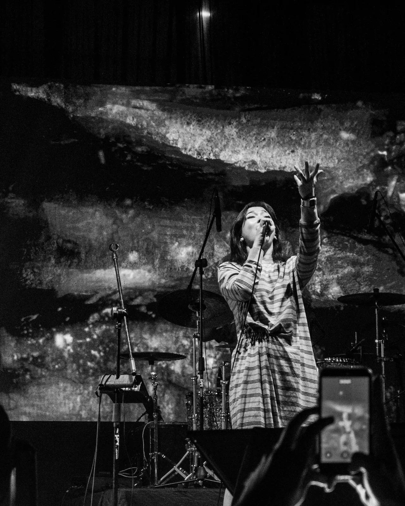

Stories
Through the Lens.
I'm Muhammad Nabil Firdaus, a photographer and visual storyteller capturing people, performances, and everyday life through intentional frames.
Explore selected works ↗
I'm Muhammad Nabil Firdaus, a photographer and visual storyteller capturing people, performances, and everyday life through intentional frames.
Explore selected works ↗
LIVE PERFORMANCE / 2026
LIVE PERFORMANCE / 2026
LIVE PERFORMANCE / 2026From energetic concert stages and personal portraits to warm coffee-shop stories and meaningful events, my approach is rooted in real expressions, purposeful composition, and visual narratives.
Meet the photographer ↗Available for photography, videography, creative content, and selected collaborations in Lombok and beyond.
Get in touch ↗